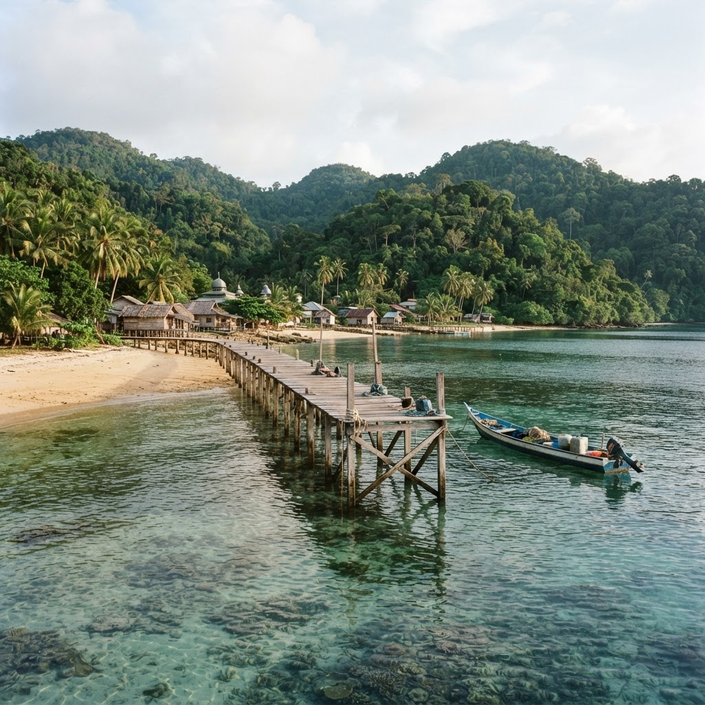
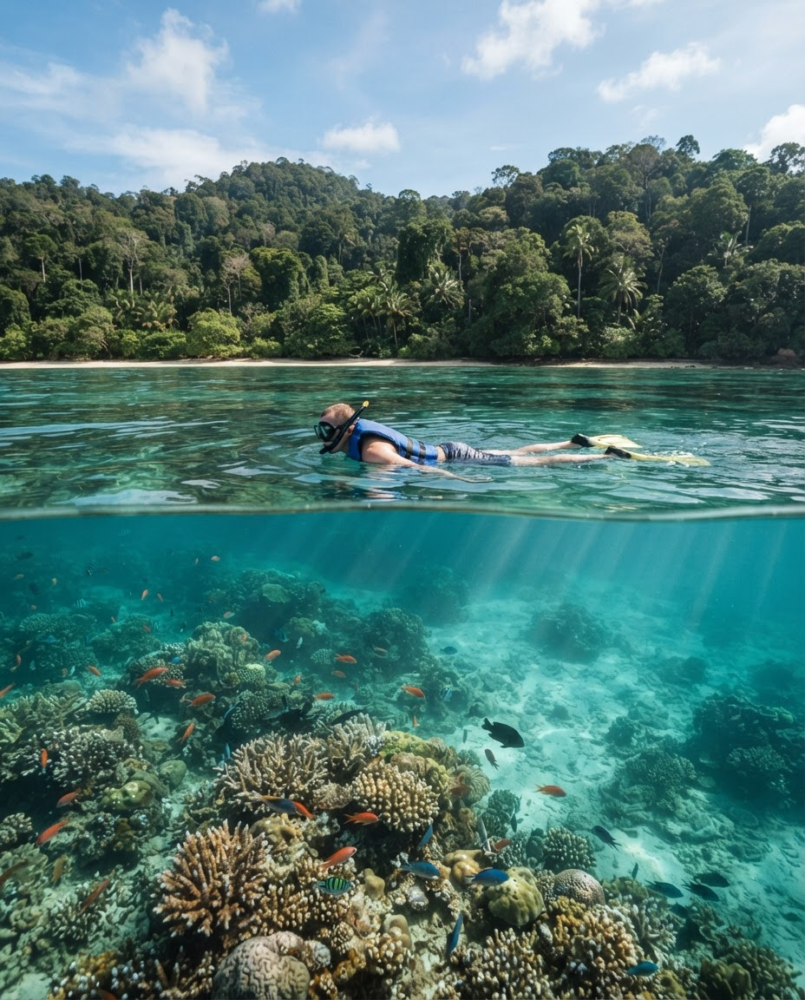
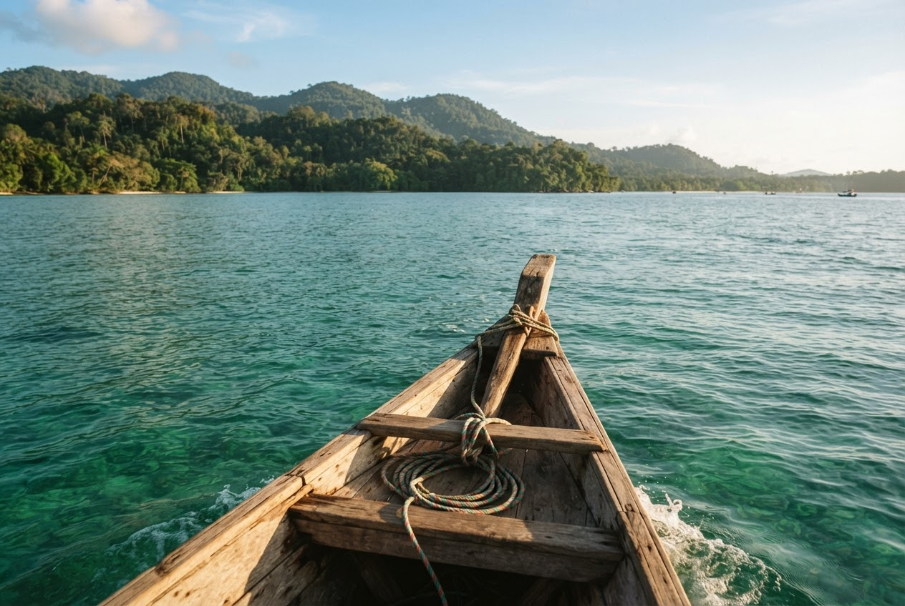
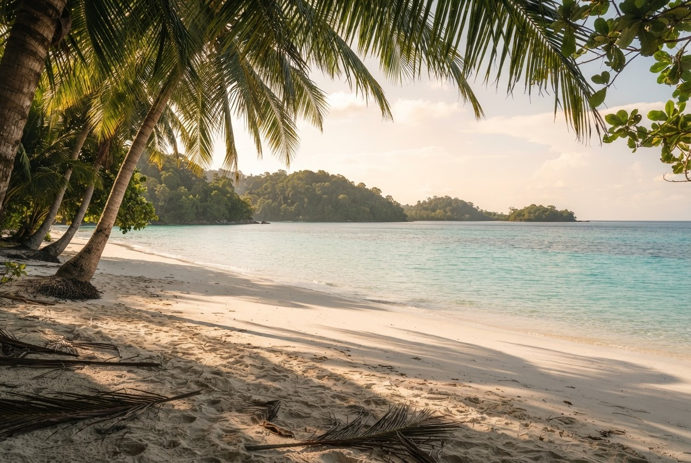
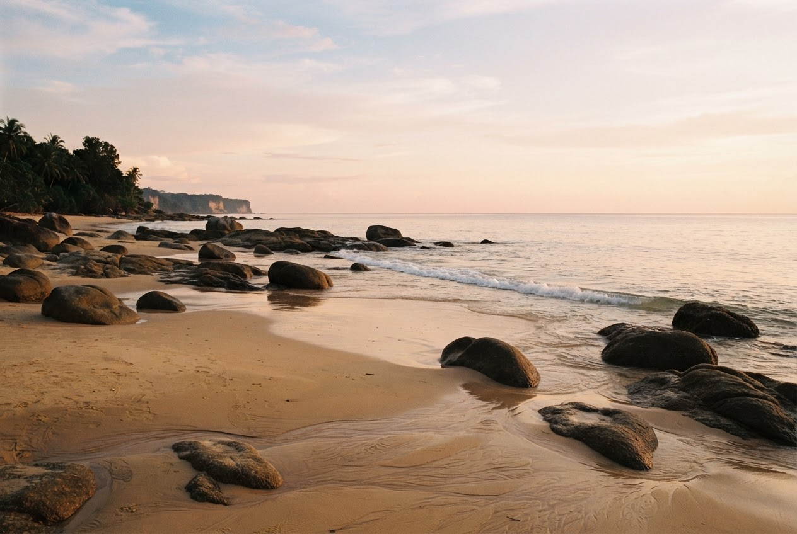
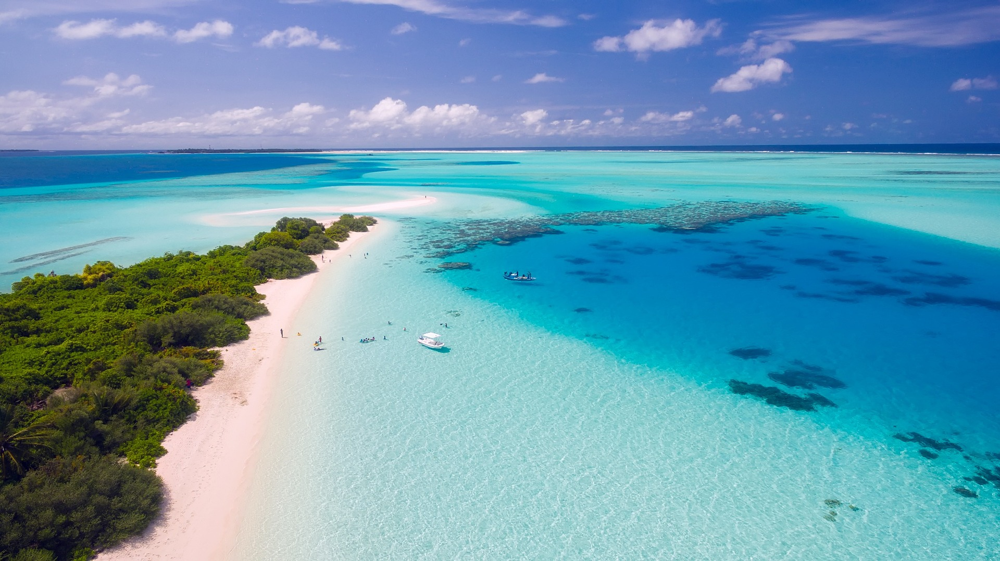
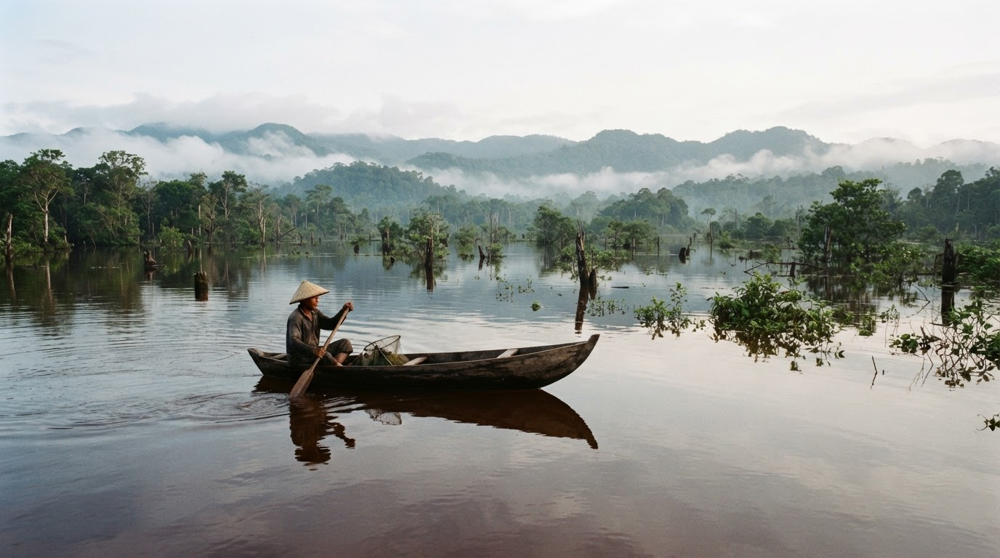
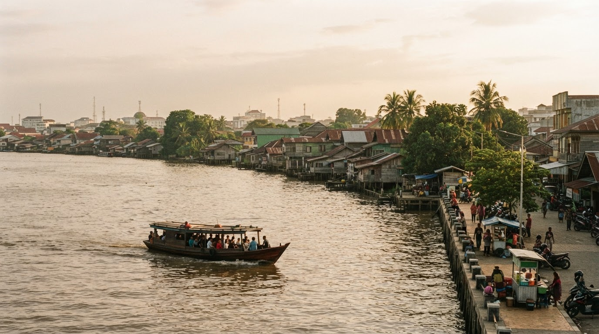

BENGKAYANG · PULAU & BAWAH LAUT
Pulau Lemukutan
↗Menyapa kehidupan bawah laut, lalu pulang ke tepi pulau yang teduh. Untuk Anda yang ingin dekat dengan laut, bukan sekadar melihatnya.
SEBUAH AJAKAN UNTUK MENJEDA
PESISIR • PULAU • CERITA LOKAL
Di pesisir barat Kalimantan, ada pantai yang panjang, pulau-pulau kecil, dan senja yang tak perlu terburu-buru. Sela Barat adalah teman merancang perjalanan Anda, berbasis di Kalimantan Barat.
Temukan tempat yang memanggil AndaTEMPAT UNTUK JATUH HATI
Pilih biru yang Anda rindukan. Setiap sudut punya cara sendiri untuk membuat Anda tinggal lebih lama.

BENGKAYANG · PULAU & BAWAH LAUT
Menyapa kehidupan bawah laut, lalu pulang ke tepi pulau yang teduh. Untuk Anda yang ingin dekat dengan laut, bukan sekadar melihatnya.
Akses pulau memerlukan penyeberangan. Rute dan kegiatan menyesuaikan cuaca, kondisi laut, serta ketersediaan setempat.

LEBIH DEKAT DENGAN LAUT. LEBIH PEDULI PADANYA.
BUKAN SEKADAR SINGGAH
Snorkeling di sekitar Lemukutan, saat kondisi memungkinkan. Bergerak pelan, amati ikan, dan biarkan karang tetap tumbuh tanpa disentuh.
Duduk di bawah teduh pohon, baca beberapa halaman, atau dengarkan ombak di Randayan. Waktu luang juga layak masuk rencana perjalanan.
Di Temajuk, biarkan sore berakhir tanpa buru-buru. Langit, angin, dan garis pantai menjadi kenangan sederhana yang tinggal lebih lama.
Aktivitas air mengikuti kondisi laut dan arahan pendamping. Gunakan pelampung sesuai kebutuhan.
BERANGKAT DARI SEBUAH IDE
Tiga inspirasi awal, bukan paket yang mengikat. Ceritakan keinginan Anda; rute dan ritmenya kita susun bersama.

PULAU & SNORKELING
Ide durasi: 2 hari / 1 malam
Darat ke pesisir Bengkayang, dilanjutkan dengan perahu menuju pulau.
Jelajah tepi pulau, snorkeling sesuai kondisi, dan waktu santai.
Perlu dikonfirmasi: Jadwal perahu, penginapan, serta kebutuhan alat snorkeling.

PANTAI & WAKTU LUANG
Durasi disesuaikan
Perjalanan darat ke pesisir Bengkayang, lalu penyeberangan ke Randayan.
Menikmati pantai, bersantai di bawah pepohonan, dan berburu cahaya sore.
Perlu dikonfirmasi: Akses perahu, izin kunjungan, serta pilihan singgah atau menginap.

PESISIR & SENJA
Ide durasi: 3 hari / 2 malam
Perjalanan darat melalui Sambas menuju kawasan pesisir Temajuk.
Jalan di pantai, menikmati lanskap pesisir, dan menunggu matahari terbenam.
Perlu dikonfirmasi: Waktu tempuh, kondisi jalan, penginapan, serta titik penjemputan.
Durasi di atas adalah inspirasi. Penawaran mengikuti tanggal, jumlah peserta, transportasi, akomodasi, dan aktivitas pilihan. Rincian biaya serta yang termasuk dan tidak termasuk dibahas sebelum Anda menyetujui perjalanan.

SEBELUM BERANGKAT
Gambaran singkat pesisir, pulau, dan ritme perjalanan yang biasa kami susun. Bila sudah terasa cocok, ceritakan rencana Anda.
BERBASIS DI KALIMANTAN BARAT
Keindahan layak dinikmati dengan tenang. Konsultasi membantu menyatukan keinginan Anda dengan kenyataan di perjalanan.
Mari susun rencananyaBicarakan titik berangkat, sambungan darat dan perahu, serta waktu istirahat. Lebih sedikit bolak-balik, lebih banyak waktu menikmati tempat.
Liburan berdua, bersama keluarga, atau teman punya kebutuhan berbeda. Sesuaikan aktivitas, kenyamanan menginap, dan ruang untuk beristirahat.
Cuaca dan kondisi laut jadi pertimbangan, bukan pengganggu. Bahas alternatif rute dan kebiasaan berwisata yang menjaga pantai tetap bersih.
MASIH ADA CERITA DI DARAT
Jika waktu Anda lebih panjang, buka bab lain: perairan pedalaman dan kehidupan di kota khatulistiwa.

KAPUAS HULU · DANAU & LAHAN BASAH
Bukan laut, melainkan hamparan danau musiman dan hutan rawa di pedalaman. Jelajah perairannya membutuhkan rencana tersendiri; akses dan lanskap mengikuti musim serta tinggi air.

KOTA KHATULISTIWA · SUNGAI & CERITA
Berkenalan dengan tepian Sungai Kapuas, singgah untuk kopi, dan cicipi ragam kuliner kota. Sebuah pembuka atau penutup perjalanan untuk mengenal keseharian Kalimantan Barat.
Danau Sentarum berada di Kapuas Hulu, jauh dari rute pesisir. Bukan tambahan singkat dalam trip pulau; konsultasikan waktu dan akses secara terpisah.
SEBELUM MENGEMAS TAS
Sedikit kejelasan, supaya Anda bisa mulai membayangkan perjalanannya.
Kondisi laut dan cuaca bisa berubah. Bahas tanggal rencana Anda, lalu konfirmasi kondisi serta jadwal penyeberangan mendekati keberangkatan.
Sampaikan kemampuan berenang Anda saat konsultasi. Kesesuaian lokasi, pelampung, pendampingan, dan alternatif aktivitas perlu dibahas terlebih dahulu.
Tergantung rancangan trip. Minta rincian transportasi, perahu, penginapan, makan, peralatan, biaya tambahan, serta ketentuan perubahan atau pembatalan.
Cukup tanggal atau perkiraan waktu, jumlah peserta, titik berangkat, kisaran anggaran, dan gaya liburan yang Anda sukai. Belum punya tujuan? Kita mulai dari sana.